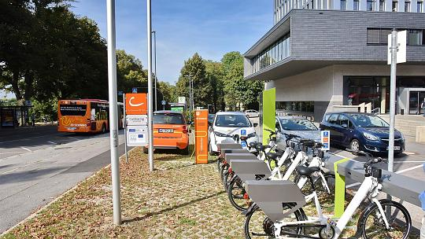

Bikeman
Bikeman is a CMS (abbr.: Central Management System) and implements a protocol. The protocol is designed to be implemented as a RESTful Webservice with HTTP as the underlying data transfer protocol. The resources are represented in JSON data format. We require that all communications are done encrypted, e.g. using SSL/TLS or VPN.

IXSI
Aim of this interface specification is the information exchange of information systems for rentals vehicles with travel information systems. The reason for the information exchange is the requirement of creating intermodal travel chains combining rental services and public transport. IXSI defines an asynchronous or synchronous data exchange of station information, vehicle information, availabilities, bookings and prices. Therefore IXSI defines:
- A Role Model
- A Service hierarchy of different qualities of information exchange
- Interaction sequences to explain the order of messages between the partners based on the different service levels
- The data model
- Recommendations for the use of specific technologies for the data exchange and parsing
- Tables of allowed values for enumerations

SteVe
SteVe (abbr. for Steckdosen Verwaltung, engl.: socket administration) manages customer and charging station data. Steve supports RFID-Cards for authentification processes between customers and charging stations. The communication protocol has been implemented using OCPP (Open Charge Point Protocol). It is a Web application designed to run under Apache Tomcat and consists of multiple Java servlets. It uses the Apache CXF framework for creating and receiving SOAP messages. Moreover, CXF supports Web Services Addressing. SteVe was tested successfully in operation.